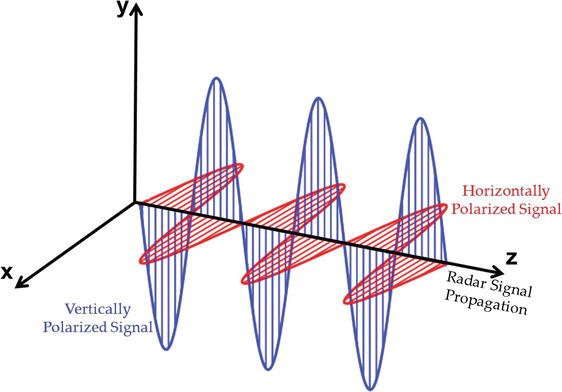

9 Week 9
Synthetic Aperture Radar (SAR)
9.1 Summary
SAR remote sensing satellites are active remote sensing instruments, independent of weather and sun illumination.
9.1.1 How does it work?
They transmit electromagnetic microwave from radar antenna and record the backscattered signal from the radar target. Thanks to the use of synthetic antenna which exploits the motion of the aircraft as it comprises multiple images (swath), there is no need for physical antenna, which would have needed to be several kilometers long (!)
9.1.2 SAR polarization
Polarization of SAR implies the orientation of the electrical field of the electromagnetic wave (Figure 1). It affects the nature of what we can see with SAR.

Shorter wave lengths penetrate less deeply into objects. But for example P-BAND can penetrate way more into, e.g canopy, and therefore it can provide an image for more detailed interpretation, Double Bounce scattering generates very strong return signals.
Rough scattering (e.g. bare earth) = most sensitive to VV (vertical vertical polarization) Volume scattering (e.g. leaves) = cross, VH or HV Double bounce (e.g. trees / buildings) = most sensitive to HH. (horizontal horizontal)
Certain surfaces absorb electrical systems more strongly -> this property matters for the reflected outcome, e.g. concrete surface vs metal surface. Interestingly, SAR does not penetrate water beyond a few millimeters –> as a consequence one of the limitations of SAR imagery is that moisture (e.g. snow) will make signal to be absorbed differently
9.2 Applications
Change detection:
- Example 1 (from lecture) Phase - location of wave on the cycle when it comes back to the sensor. If the surface changes (due to earthquake for example), by even 3cm (!), the signal will be returned differently. It allows to detect small shifts on the earth surface - it allows to map the changes in elevations
- Example 2 (Ballinger and Zwijnenburg 2023) Pixel Wise T-Test -> the main challenge is to identify buildings that have been damaged due to conflicts - when and where. However, in previous projects based on satellite imagery and CNN techniques, there have been following issues observed:
- expensive - it cannot be replicated on the whole country because it needs high resolution imagery to be replicated, e.g. $13.9 million to scan all Ukraine each time
- it is not persistently collected like, e.g. Sentinel 1
- neural networks require training to be accurate in different geographies -> according to Monitoring war destruction from space using machine learning Hannes Mueller -> the issue is train/test split is based on same cities and the accuracy results, if replicated in different cities (even if in the same country) tend to drop significantly. In this case, as explored by Ballinger and Zwijnenburg (2023), SAR radar imagery can be applied, as it has been presented on the example of Ukraine and Gaza war zones, where flat roof surface (rumbled or not) has been used to detect damaged buildings (possible thanks to changes in backscattering). This method allowed to replicate high accuracies across different cities in different countries. Limitations here: snow on the rooftops!
- Example 3 (Dabboor et al. 2018) Wetland Monitoring and Mapping Using Synthetic Aperture Radar Implementation of SAR imagery for water level monitoring, i.e. allows the evaluation of methane emission contributions to climate change from degraded and thawing wetlands. SAR is particularly useful in this case since it provides data regardless of weather conditions and lighting, and wetlands tend to be located in remote areas or under cloud cover.
SAR has became a crucial tool in remote sensing, serving both military and non-combatant purposes. For military applications, it is used in intelligence gathering, battlefield survey, and weapons management. On the civilian side, SAR supports a range of activities including monitoring agriculture and land use, topographical mapping, geology, managing oil spills, observing sea ice, and many more. However, as it has been mentioned by Singh et al. (2021) there are also some limitations that need to be considered when using SAR imagery, i.e. SAR images are inherently speckled in nature. There are various despeckling methods which should be implemented in order to reduce the scale of this issue, before making use out of this resource.
9.2.1 Practical SAR in GEE
9.3 Reflection
This week I am especially amazed by vast applications of SAR imagery. Its ability to provide an extensive data in an affordable way allows for advanced analysis of many issues. I am particularly interested in exploring the topic of damage recognition as in the case of Ukraine. Seems like SAR imagery could offer more accuracy than previously used machine learning models, perhaps its advantages could be applied across other topics as well.
Also, since it’s my last entry to diary, I would like to conclude with a reflection regarding all of the previous weeks. I have to say that my knowledge regarding remote sensing has highly increased. I am amazed with how many opportunities there are! Will definitely make use out of what I learnt here, and got to know some cool fun facts that I will definitely use for my small talks ;)
I think the way this module was delivered was very good, I also enjoyed this type of assessment (Learning Diary and presentation) and found it very useful in motivating me with regular engagement with the lecture’s content. Thank you so much for sharing your knowledge and experiences. Great job!